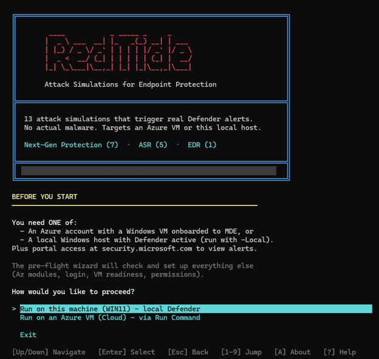
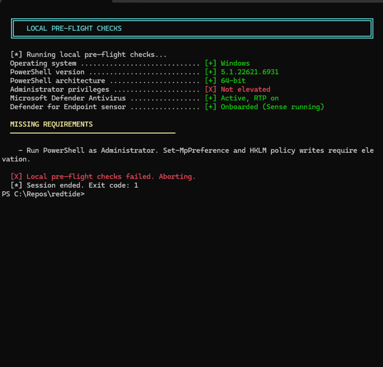
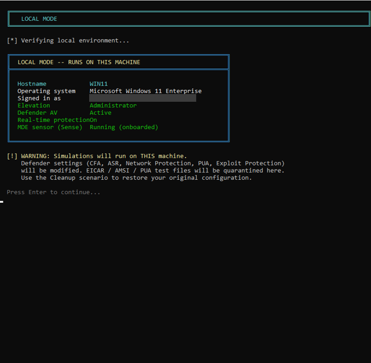
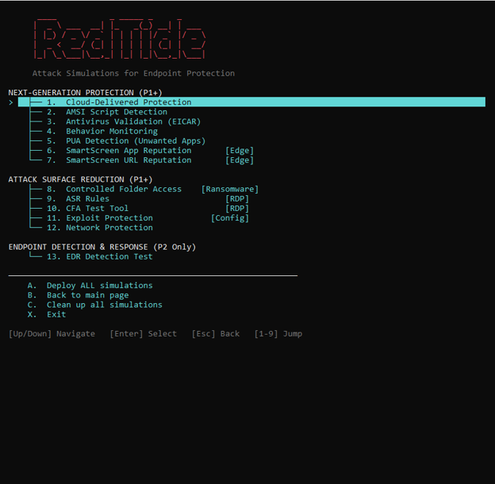
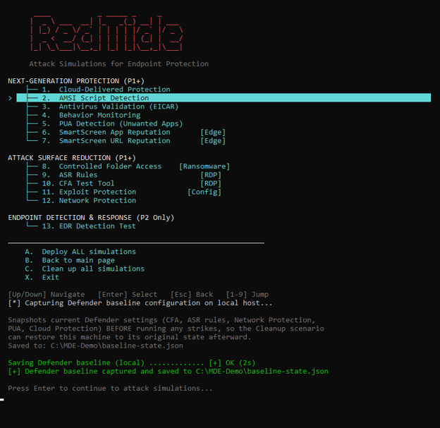
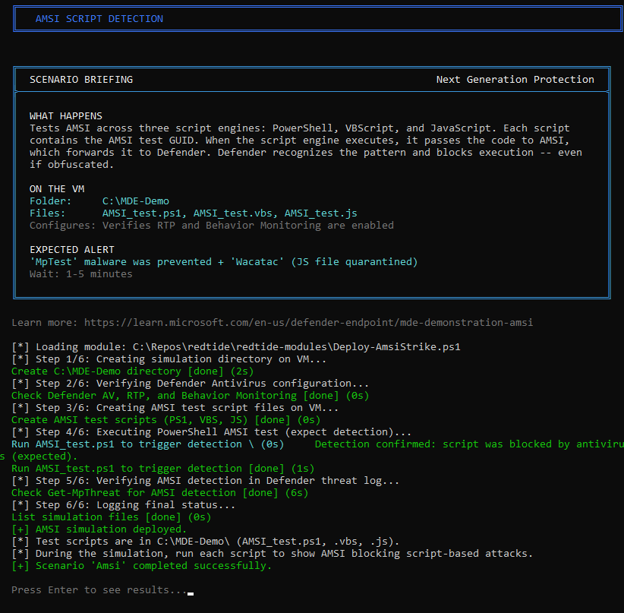
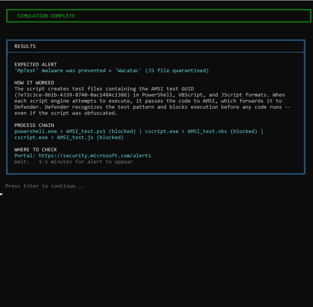
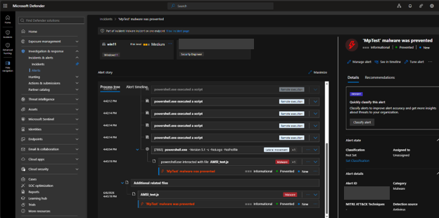
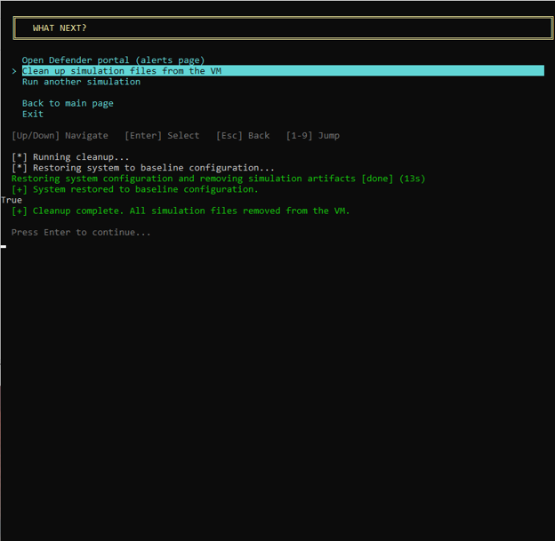

RedTide: Automated Attack Simulations for Endpoint Security Validation
Run controlled attack simulations in a Windows lab and see how Microsoft Defender for Endpoint responds.
Disclaimer: RedTide is a personal project, not an official Microsoft product. Use it only on test machines you're authorized to modify.
I kept running into the same problem when testing endpoint protection. Microsoft provides demonstration scenarios for the different capabilities, but running them means working through the preparation for each one. Configure the protection, get the test files in place, run the test, look for the result, and put the settings back. None of those steps is particularly complicated. There are just enough of them that doing a full run becomes a task of its own.
That is what I wrote RedTide to help with. I wanted to spend less time preparing the machine and more time looking at what Defender actually did with the test. The tool handles the setup and execution, gives you the information you need to find the detection, and provides cleanup afterward. You still have to open Defender and review the result. I think that distinction matters, because a script finishing successfully can tell you much less than it appears to.
The scenarios use test artifacts rather than live malware: EICAR strings, the AMSI test pattern, Microsoft's SmartScreen and Defender demo URLs, and commands designed to trigger behavioral detections. They do change security settings and write files, so use a dedicated test machine.
What a run looks like
You can run RedTide locally from an elevated PowerShell session or target a Windows VM in Azure through Run Command. The Azure mode needs the Az modules, a signed-in session, and permission to run commands on the VM. Scripted steps run remotely, but browser and Word demonstrations still need an interactive desktop on the target.
The screenshots below follow a local run. At the welcome screen, choose the target and run the pre-flight checks.

Pre-flight checks Windows, the PowerShell version and architecture, administrator rights, Defender Antivirus, real-time protection, and sensor onboarding. Here the shell wasn't elevated, so the check failed. That needs fixing before continuing.

Once the checks pass, the connection card shows the host and its protection status. Confirm you're targeting the right machine before selecting a scenario.

Use the arrow keys to browse the menu, number keys to jump to an option, and Esc to go back. You can select one scenario or run the full set in sequence.

Before the first simulation, RedTide saves the Defender settings it tracks to baseline-state.json. Cleanup uses those saved values rather than applying a generic default configuration.

Each scenario explains what it will change and the result to expect. Some also need a manual step, such as opening a test URL in Edge for SmartScreen. This AMSI example runs test scripts and reports that antivirus blocked execution.

The results card gives you the expected alert name, process chain, and portal location, plus an Advanced Hunting query where available. Treat this as a guide for the review, not confirmation that the portal received the alert.

In Defender, look for the alert on the target device and inspect its process tree. In this run, MpTest malware was prevented shows the AMSI test activity. That confirms this particular detection reached the portal; it doesn't establish coverage for attacks beyond the scenario.

After reviewing the results, select cleanup to restore the settings it tracks and remove the simulation files. It is not a complete rollback: some Defender and Office changes remain. Keep a VM checkpoint from before the run and revert to it when you're finished, rather than relying on the cleanup message alone.

The simulations
The scenarios come from Microsoft's Defender for Endpoint demonstrations. RedTide packages those procedures into the menu shown above. The table lists the current set and what each is intended to exercise.
| # | Simulation | Area | What it tests |
|---|---|---|---|
| 1 | Cloud-Delivered Protection | Next-Gen | Cloud lookup blocks a known threat within seconds |
| 2 | AMSI Detection | Next-Gen | AMSI intercepts a malicious script pattern in memory |
| 3 | Antivirus (EICAR) | Next-Gen | AV engine detects the standard EICAR test string |
| 4 | Behavior Monitoring | Next-Gen | Behavioral engine flags suspicious process activity |
| 5 | PUA Detection | Next-Gen | PUA protection blocks a potentially unwanted application |
| 6 | SmartScreen (App) | Next-Gen | SmartScreen blocks download of an untrusted application |
| 7 | SmartScreen (URL) | Next-Gen | SmartScreen blocks navigation to a known malicious URL |
| 8 | Controlled Folder Access | ASR | CFA blocks an unauthorized write to a protected folder |
| 9 | ASR Rules | ASR | ASR rule blocks an Office macro from spawning a child process |
| 10 | CFA Test Tool | ASR | Microsoft CFA test tool validates folder protection |
| 11 | Exploit Protection | ASR | Exploit mitigations (DEP, ASLR, CFG, SEHOP) are active |
| 12 | Network Protection | ASR | Network protection blocks a connection to a malicious domain |
| 13 | EDR Detection | EDR | A suspicious process chain triggers a behavioral alert with a full process tree |
Driving it from the command line
Built with
PowerShell 5.1+Az.Accounts · Az.Compute · Az.ResourcesInvoke-AzVMRunCommandPester 5.0+You can also select a scenario directly. For an Azure VM, pass the resource group and VM name:
PowerShell · Azure VM path
.\Start-RedTide.ps1 `
-Scenario CloudProtection `
-ResourceGroup "security-lab-rg" `
-VMName "test-win11"For the local machine, use -Local instead of the Azure parameters:
PowerShell · Local path
.\Start-RedTide.ps1 -Local -Scenario CloudProtection-WhatIf previews scenario commands, but startup, pre-flight, baseline capture, and the ASR sample download can still run. It is not a side-effect-free dry run. -SkipChecks skips the full pre-flight page, not every connection check. Direct invocation still prompts for input and doesn't remove manual scenario steps or the need to review detections. Run -Scenario Cleanup against the same target afterward.
What interests me in a run like this is being able to explain the result. If the expected alert does not appear, I want to understand whether the test ran correctly, whether the protection was configured as expected, or whether I am looking in the wrong place. Those are different problems, and working through them is a useful part of the exercise. That is where I would rather spend the time that used to go into preparing the same tests by hand.
Get the source code
RedTide is available on GitHub under the MIT license, with the simulation scripts and setup instructions. For questions about the tool, you can also reach me on LinkedIn.
View on GitHub